Descrição
Explore o fascinante mundo dos animais, suas características, habitats e cuidados essenciais para preservá-los.
🤖 ODS: 14.1 Até 2025, prevenir e reduzir significativamente a poluição marinha de todos os tipos, especialmente a advinda de atividades terrestres, incluindo detritos marinhos e a poluição por nutrientes
Desenvolvido por Thiago Martins Santos (autista) com hiperfoco em tubarões.
Contato: thiago1724so@gmail.com
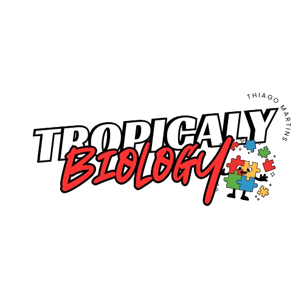
Agradeço a vocês pela visita ao meu site, espero que tenham gostado.
Explore o fascinante mundo dos animais, suas características, habitats e cuidados essenciais para preservá-los.
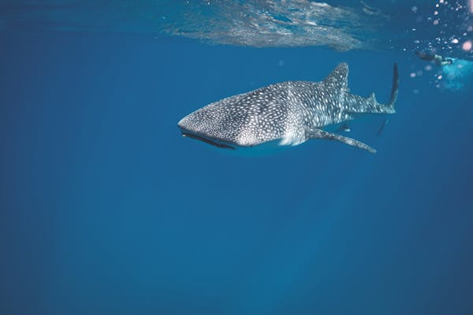
Características: O tubarão-baleia é o maior peixe do mundo, com um corpo robusto e aerodinâmico. Ele tem uma cabeça larga e achatada, boca transversal e grande, e cinco fendas branquiais.
Habitat: O tubarão-baleia (Rhincodon typus) vive em águas tropicais e subtropicais, em todos os oceanos do mundo, exceto o Mediterrâneo.
Cuidados: O tubarão-baleia é um animal dócil e inofensivo aos humanos. Para evitar estresse ao animal, é desaconselhada a interação.
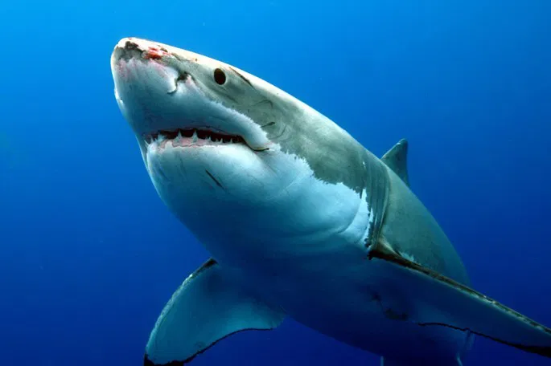
Características: Mamífero marinho inteligente e social.
Habitat: O tubarão branco (Carcharodon carcharias) vive em águas costeiras e pelágicas de oceanos temperados e tropicais.
Cuidados: Evitar a poluição e redes de pesca.
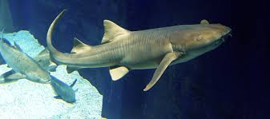
Características: O tubarão-lixa (Ginglymostoma cirratum) é um tubarão com pele áspera, boca articulada e dentes pequenos e pontiagudos. É uma espécie antiga e tem distribuição global.
Habitat: O tubarão-lixa vive em águas tropicais e subtropicais do Atlântico e Pacífico, em regiões costeiras e oceânicas.
Cuidados: O tubarão-lixa é uma espécie marinha que merece respeito e proteção. É importante evitar qualquer interação que possa ameaçar o animal.
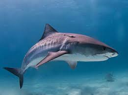
Características: O tubarão-tigre (Galeocerdo cuvier) é uma das maiores espécies de tubarão, podendo atingir 7,4 metros de comprimento. É um predador oportunista e voraz, que se alimenta de uma grande variedade de animais marinhos.
Habitat: O tubarão-tigre (Galeocerdo cuvier) vive em águas tropicais e temperadas quentes, em todo o mundo, exceto no Mar Mediterrâneo.
Cuidados: Os tubarões-tigre são predadores vorazes que se alimentam de uma variedade de animais marinhos, incluindo peixes, crustáceos, lulas, tartarugas e mamíferos. Embora sejam apelidados de "devoradores de homens", raramente atacam pessoas.
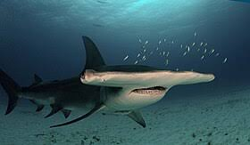
Características: O tubarão-martelo é um peixe de água salgada com uma cabeça larga e projetada lateralmente, em formato de martelo.
Habitat: O habitat do tubarão-martelo varia de acordo com a espécie, mas geralmente é em águas costeiras.
Cuidados: Os tubarões-martelo requerem tanques grandes e adaptados, pois são vulneráveis durante o transporte e podem se ferir.
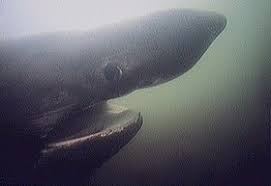
Características: O tubarão-peregrino (Cetorhinus maximus) é um tubarão filtrador que tem uma boca muito grande e fendas branquiais desenvolvidas para capturar plâncton. É também conhecido como tubarão-frade, tubarão-elefante, peixe-frade, padre e carago.
Habitat: O tubarão-peregrino vive em águas costeiras, desde a superfície até cerca de 910 metros de profundidade. Ele é encontrado em várias regiões do mundo, como o Atlântico Norte e o Pacífico Norte.
Cuidados: O tubarão-peregrino é um animal filtrador que se alimenta de zooplâncton, por isso, não é considerado uma ameaça aos humanos. No entanto, é importante ter cuidado com tubarões em geral, pois eles podem atacar em águas rasas.
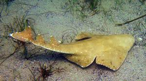
Características: O tubarão-anjo, também conhecido como cação-anjo, é um tubarão pequeno ou médio com corpo achatado e barbatanas peitorais largas. Se assemelha a uma raia e é um predador de emboscada.
Habitat: O tubarão-anjo, também conhecido como cação-anjo, vive em habitats costeiros rasos, em plataformas continentais e em estuários.
Cuidados: O cação-anjo é um tubarão cartilaginoso que pode ser ameaçado de extinção. A pesca e o comércio de tubarões podem causar desequilíbrios ambientais.
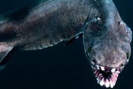
Característica: O tubarão cobra (Chlamydoselachus anguineus) é um peixe de aparência pré-histórica que vive em águas profundas e escuras. É considerado um fóssil vivo, pois é o único membro existente da familía.
Habitat: Está espécie de tubarão tem preferência por águas mais quentes e ocupa a região costeira, tendo aparições em águas rasas, como a zona de arrebentação.
Cuidados: o tubarão cobra é um animal raro e ameaçado de extinção. A pesca em alto mar e a captura acidental em redes de arrasto são ameaças á sua sobrevivência.
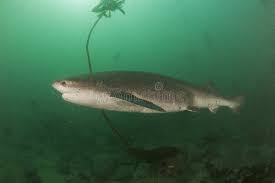
Característica: O tubarão vaca tem várias características como focinho rombudo, barbatana dorsal pequena e fendas branquiais.
Habitat: Vária de acordo com a espécie, podendo se em águas costeiras rasas ou em águas profundas.
Cuidados: Não ocasionar poluição em oceanos e mares.
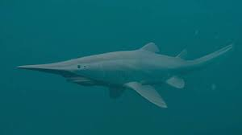
Característica: chega aos (4 metros) de comprimento, podendo talvez ser ainda maior, estimativas de fotografias de uma amostra tirada no Golfo do México sugerem que está espécie pode alcançar os (5,4-6,17) metros.
Habitat: O tubarão duende vive no fundo do oceano, em águas tropicais e temperadas, em todos os oceanos.
Cuidados: O tubarão duende é um animal que vive no fundo do mar e não requer cuidados especiais.
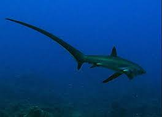
Característica: É um peixe com nadadeira caudal longa, boca pequena, denstes pequenos e barbatanas peitorais grandes.
Habitat: Vive em águas tropicais e temperadas, tanto perto da costa quanto em mar aberto.
Cuidados:É uma espécie vulnerável á pesca predatória e á captura acidental. Para preservar esta espécie, é importante adotar medidas de conservação e gestão.
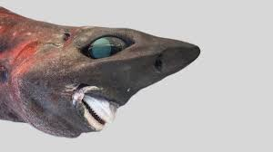
Característica: O tubarão-charuto (Isistius brasiliensis) é um pequeno tubarão com corpo em formato de charuto, focinho curto e bulboso. Ele é também conhecido como tubarão cortador de biscoito.
Habitat: O tubarão-charuto (Isistius brasiliensis) vive em águas profundas, tropicais e subtropicais, perto de ilhas.
Cuidados: Não polua o ambiente dele.
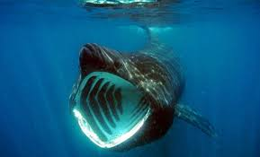
Característica: O tubarão-frade (Cetorhinus maximus) é um peixe gigante, sem dentes, que se alimenta de plâncton. É o segundo maior peixe do mundo e um dos tubarões mais reconhecíveis.
Habitat: O tubarão-frade (Cetorhinus maximus) vive em águas temperadas e árticas em todo o mundo. É um animal pelágico costeiro que migra com as estações.
Cuidados: Ao observar tubarões-frade, deve ter-se respeito e cautela devido ao seu tamanho e poder.
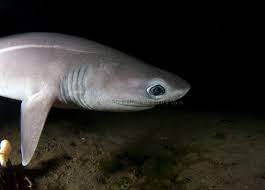
Característica:O tubarão-cachorro é um nome genérico para várias espécies de tubarões pequenos, como os da família Scyliorhinidae. Eles geralmente têm corpos alongados, pele áspera e padrões de manchas ou listras. Costumam viver em águas profundas e têm hábitos noturnos. Sua alimentação é composta por pequenos peixes e invertebrados. São inofensivos para os humanos e algumas espécies são ovíparas, colocando ovos conhecidos como "bolsas de sereia".
Habitat: vive no noroeste do Oceano Pacífico, em plataformas continentais e insulares, principalmente perto da costa.
Cuidados: Para se proteger de um ataque de tubarão, deve afastar-se lentamente de frente para o animal, sem bater braços ou pernas. Se o tubarão vier para cima, deve gritar e reagir para afugentá-lo.
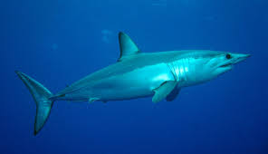
Característica: O tubarão-mako (Isurus oxyrinchus) é um tubarão grande, veloz e com dentes afiados. Ele é encontrado em mares tropicais e temperados, e pode atingir até 4,45 metros de comprimento.
Habitat: O habitat do tubarão-mako é em águas tropicais e temperadas dos oceanos, podendo ser encontrado em todo o mundo.
Cuidados: O manejo de tubarões-mako é complexo devido à sua alta migração e à pesca por várias nações.
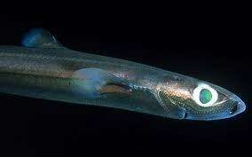
Característica: Os tubarões-lanterna são peixes bioluminescentes que possuem características como cabeça grande, corpo robusto e pele coberta de dentículos dérmicos. Eles podem ser encontrados em águas profundas e são predadores generalistas.
Habitat: O habitat do tubarão-lanterna varia de acordo com a espécie, podendo ser encontrado em águas profundas do Atlântico e Pacífico.
Cuidados: O tubarão-lanterna é um animal que vive no fundo do mar e usa bioluminescência para se proteger de predadores e caçar presas.
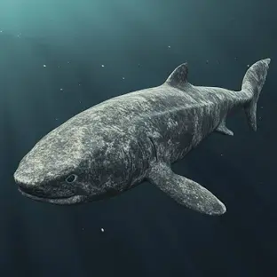
Característica: O tubarão-da-Groenlândia (Somniosus microcephalus) é um animal de grande porte, com corpo pesado e atarracado. É o vertebrado mais longevo do mundo, podendo viver mais de 400 anos.
Habitat: O tubarão-da-Groenlândia vive nos oceanos Ártico e Atlântico Norte, em águas frias. É o único tubarão que vive no Ártico durante todo o ano.
Cuidados: O tubarão-da-Groenlândia é um animal selvagem e não é recomendado aproximar-se dele.
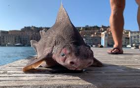
Característica: O tubarão-porco, também conhecido como tubarão-áspero-angular (Oxynotus centrina), tem as seguintes características:
Habitat: O tubarão-porco (Oxynotus centrina) vive em águas profundas, principalmente no oceano Atlântico e no Mar Mediterrâneo.
Cuidados: Para ter cuidados com os tubarões, deve evitar nadar à noite ou ao entardecer, e não nadar perto de cardumes ou pescadores. Deve também obedecer às sinalizações das praias.
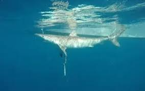
Característica: O tubarão cação noturno é uma espécie ameaçada de extinção. Para cuidar desta espécie, é importante monitorar as capturas, aplicar regulamentos e declarar habitats críticos.
Habitat: O cação-noturno (Carcharhinus signatus) vive em águas profundas do Oceano Atlântico, próximo ao fundo.
Cuidados: O cação-noturno é uma espécie de tubarão que está ameaçada de extinção. Para evitar ataques de tubarões, é importante ter cuidado quando estiver na água.
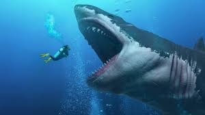
Característica: O megalodon era um tubarão gigante que viveu há milhões de anos e foi o maior predador marinho da história.
Habitat: O megalodonte vivia em oceanos tropicais e subtropicais, em águas quentes e rasas, em todo o mundo, exceto perto dos polos.
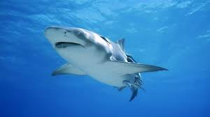
Característica:Em comparação com a aparência aerodinâmica da maioria dos outros tubarões, os tubarões-touro têm uma aparência maciça e atarracada por causa de seu corpo muito mais largo em relação ao seu comprimento. Seu nome comum vem de seu focinho curto e rombudo, que se diz assemelhar-se ao de um touro.
Habitat:O tubarão-touro (Carcharhinus leucas) vive em uma ampla variedade de habitats, desde águas costeiras até água doce.
Cuidados: Não interferir em seu habitat e nem se arpoximar.
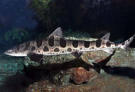
Característica:O tubarão-leopardo (Triakis semifasciata) é um pequeno tubarão com corpo fino e cabeça estreita. É conhecido por suas manchas e listras, e é encontrado em águas rasas do Pacífico.
Habitat:O tubarão-leopardo (Triakis semifasciata) vive em águas temperadas frias e quentes, em estuários e baías arenosas ou lamacentas. É encontrado na costa oeste da América do Norte, do Oregon ao Golfo da Califórnia.
Cuidados:O tubarão-leopardo é um animal carnívoro que pode ser agressivo e exigir cuidados especiais em aquários.
Envie suas dúvidas ou sugestões para: tropicalybiologiamarinha@gmail.com